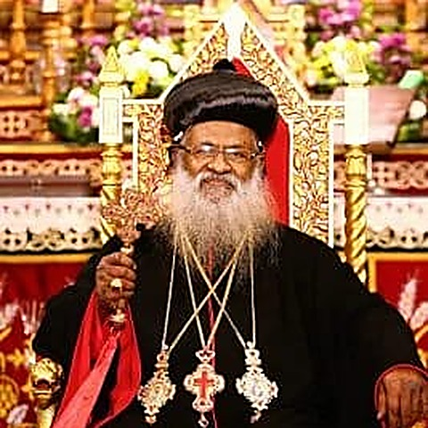
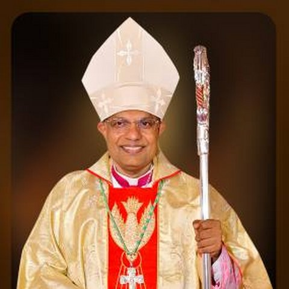
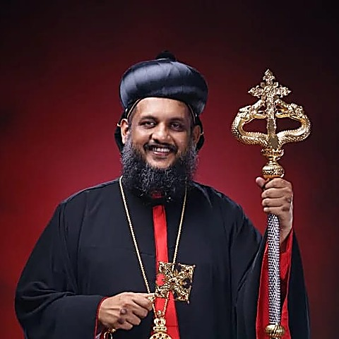
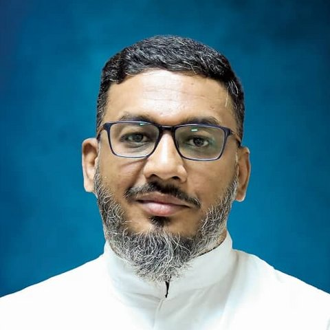
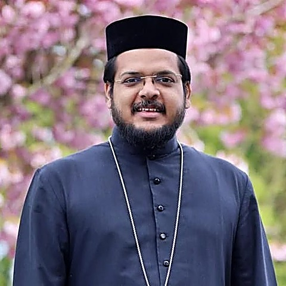
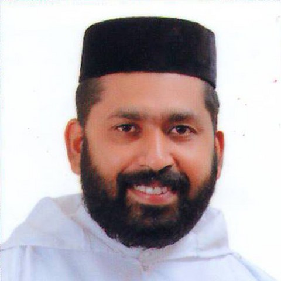
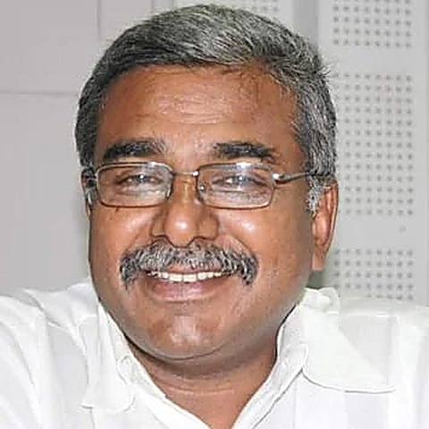
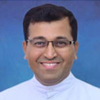
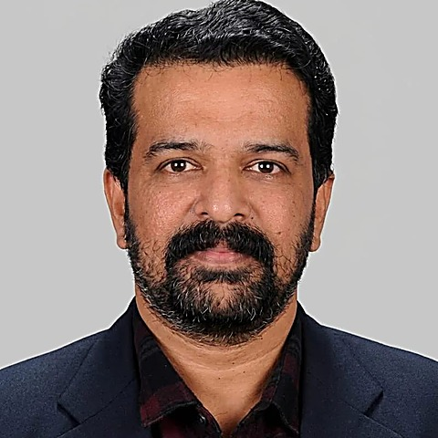
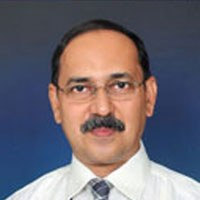

Patrons & Committees
Chief Patrons

H.H. Baselios Marthoma Mathews IIIPresident, MBCCET, Peermade, Kerala
Most Rev. Dr Peter Paul SaldanhaBishop of Mangalore
Patrons

H.G. Metropolitan Zacharia Mar SeveriosLocal Manager, MBCCET, Peermade, Kerala
Fr Kenneth Rayner CrastaAssistant Director, SJEC
Rev Fr. Jithu ThomasAdministrator, MBCCET, Peermade, Kerala
Rev Fr. John SamuelBursar, MBCCET, Peermade, Kerala
Conference Director

Dr. Oomman MammanDirector, MBCCET, Peermade, Kerala
Rev. Fr Wilfred Prakash D'SouzaDirector, SJEC
Conference Chairs

Dr. Santhosh SimonPrincipal, MBCCET, Peermade, Kerala
Dr. Rio D'SouzaPrincipal, SJEC
Conveners
- Dr. Ciji Pearl KurianProfessor, MBCCET, Peermade, Kerala
- Dr. Bincy JoseAssociate Professor, MBCCET, Peermade, Kerala
- Dr Shreeranga BhatDean R&D, SJEC, Mangaluru
- Dr Sridevi SaralayaProfessor, SJEC, Mangaluru
Organizing Secretaries
- Dr. Ushus Maria JosephMBCCET, Peermade, Kerala
- Prof. Nourin NoushadMBCCET, Peermade, Kerala
- Dr Binu K GDean-Academics, SJEC, Mangaluru
- Dr ESTR Chandra Sekhar BhojarajuSJEC, Mangaluru
Technical Advisory Committee
- Prof. A. S. AchalkumarIIT Guwahati, Guwahati
- Dr. Ayman BadawiAmerican University of Sharjah, United Arab Emirates
- Prof B B DasNITK, Surathkal
- Dr. Biju KAsst. Director, APJ AKTU, Trivandrum
- Dr. Henry AspeqvistFormer Vice President HR, World Bank. Advisor to the World Bank, Washington DC
- Prof. I. ThirinavukkarasuProfessor, Department of ICE, MIT Manipal
- Prof. Iqbal Thonse HawaldarDepartment of Accounting & Finance, College of Business Administration, Bahrain
- Dr. Jolly JoseProfessor and Chair, Strategic Engagements Research and Innovation- SADU, Mangalore
- Dr. Joseph VargheseChrist (Deemed to be University), Bengaluru
- Dr Karthik DesinguCSIR-CMERI
- Dr. Konika Das BhattacharyaIIEST Shibpur
- Dr Mohanchandra K. P.University of California, Los Angeles, CA, USA
- Dr Mrityunjay DoddamaniIIT, Jodhpur
- Dr NonappaFaculty of Engineering and Natural Sciences, Tampere University, Finland
- Dr. Pradeep GeorgeDe Montfort University, Dubai
- Dr. Pramod GeorgeMAHE, Dubai
- Dr Pushparaj ShettyNITK, Surathkal
- Dr Raghu SNational University of Singapore
- Dr Raja JayaramanDepartment of Industrial Engineering, New Mexico State University, USA
- Dr. Rajib ChakrabortyProfessor, University of Calcutta
- Prof Ramesh ThamankarVIT, Vellore
- Dr. Remmy AlexanderPhilips, Bangalore
- Dr. Rittin Abraham KurienDept. of Mechanical, Saintgits College of Engineering (Autonomous), Kottayam, Kerala, India
- Dr. S. SumitraDepartment of Mathematics, IIST, Trivandrum
- Dr. SaaraDirector R&D, Infab Semiconductor Pvt. Ltd., Bangalore
- Dr. Sharon WilsonCenter for Media and Communications Research (CMCR), University Tunku Abdul Rahman, Malaysia
- Dr. Sishaj P SimonProfessor, Department of EEE, NIT Trichy
- Dr. Somnath PanIIT, Dhanbad
- Dr. Suddhasatwa ChakrabortyJadavpur University
- Dr Sujitha Annie KurianDean, Marian College, Kuttikkanam
- Dr. Sumama DavidHAG Professor, Department of ECE, NITK, Surathkal
- Dr. Surekha KamathMIT Manipal
- Prof Tejo V. BheemasettiThe University of Arizona, USA
- Dr. Thomas HanAssociate Professor at Stockholm Resilience Centre at Stockholm University
- Dr. Vijaya PadmanabhaDepartment of Mathematics and Computer Science, Modern College of Business and Science, Muscat, Sultanate of Oman
Institutional Organizing Committee
- Dr. Oommen Tharakan KTDean (Research), MBCCET, Peermade, Kerala
- Dr. V I GeorgeHOD-EEE, MBCCET, Peermade, Kerala
- Prof. Elias Janson KHOD-ECE, MBCCET, Peermade, Kerala
- Dr. Annie ChackoHOD-CSE AI, MBCCET, Peermade, Kerala
- Prof. Meenu SajiHOD-CE, MBCCET, Peermade, Kerala
- Dr. Shaibu V BHOD-ME, MBCCET, Peermade, Kerala
- Prof. Aleyamma VargheseHOD-S&H, MBCCET, Peermade, Kerala
- Prof. AryalakshmiHOD-CSE, MBCCET, Peermade, Kerala
- Prof. Deepu JacobSystem Administrator, MBCCET, Peermade, Kerala
- Dr. Jacob JoshuaPlacement Officer, MBCCET, Peermade, Kerala
- Dr Prakash PintoHOD-Business Administration, SJEC Mangaluru
- Dr Jyothi KDean-Student Welfare, SJEC Mangaluru
- Dr Melwyn D'SouzaHOD-CSE, SJEC Mangaluru
- Dr DayakshiniHOD-ECE, SJEC Mangaluru
- Dr Rohan PintoHOD-VLSI, SJEC Mangaluru
- Dr Yajnheswaran BhagithimarHOD-Civil, SJEC Mangaluru
- Dr Hareesha BHOD-Business Application, SJEC Mangaluru
- Dr Sanath SaralayaHOD-EEE, SJEC Mangaluru
- Dr Ravikantha PrabhuHOD-Mech, SJEC Mangaluru
- Dr Harivinod NHOD-ICBS, SJEC Mangaluru